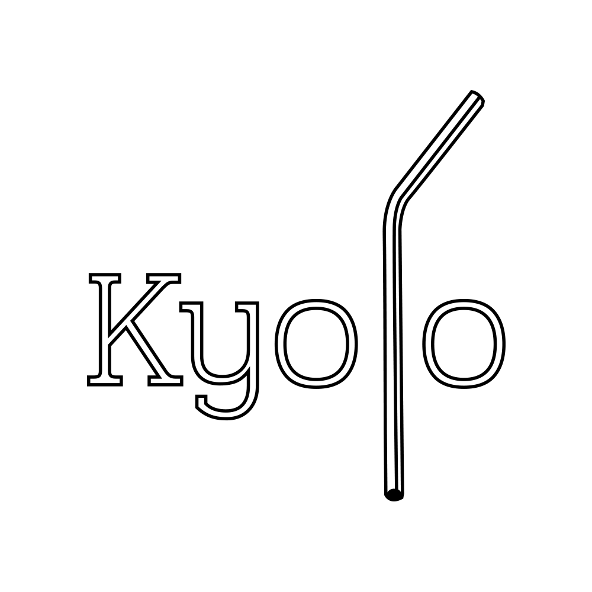
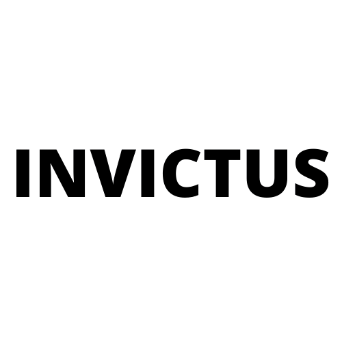
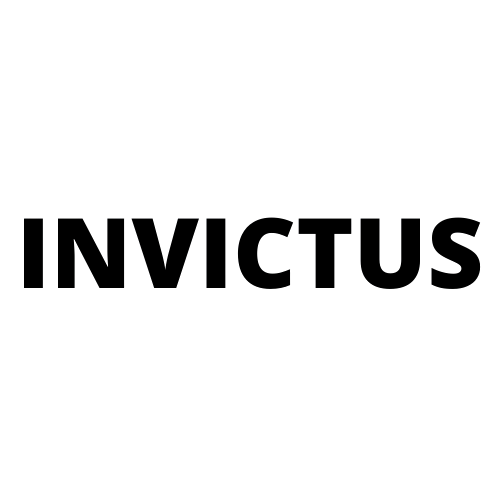
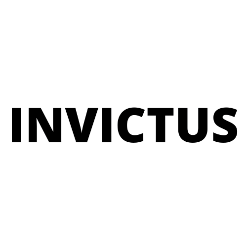
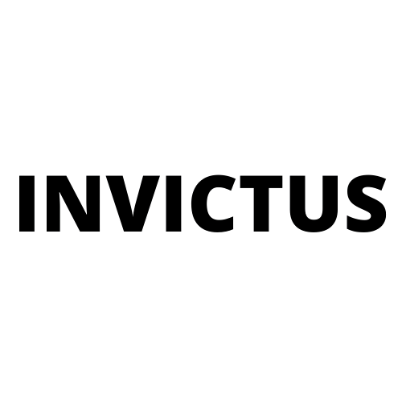

Projetos recentes

 


Que tal dar uma olhada no meu GitHub para ver mais sobre meus projetos?
https://github.com/vini-akVinícius Vieira © Todos os direitos reservados - 2020
E aí! Meu nome é Vinícius, tenho 20 anos e estou no 4º período de Sistemas de Informação na UFRPE. Fui intercambista pelo PGM no ano de 2016 e passei seis meses morando no Alasca, EUA. Atualmente, estou como Analista de Projetos na Seed a Bit e tenho dedicado meu tempo para desenvolver meus skills em front-end.
Com o básico do front-end consigo fazer sites institucionais como este da foto e este que você está acessando
Projeto feito com o framework CodeIgniter
Noções básicas de Python construídas ao longo da graduação.
Conhecimento sólido de aplicações back-end modernas usando Node.js e o framework Express.
Próximo passo :)

Que tal dar uma olhada no meu GitHub para ver mais sobre meus projetos?
https://github.com/vini-akVinícius Vieira © Todos os direitos reservados - 2020